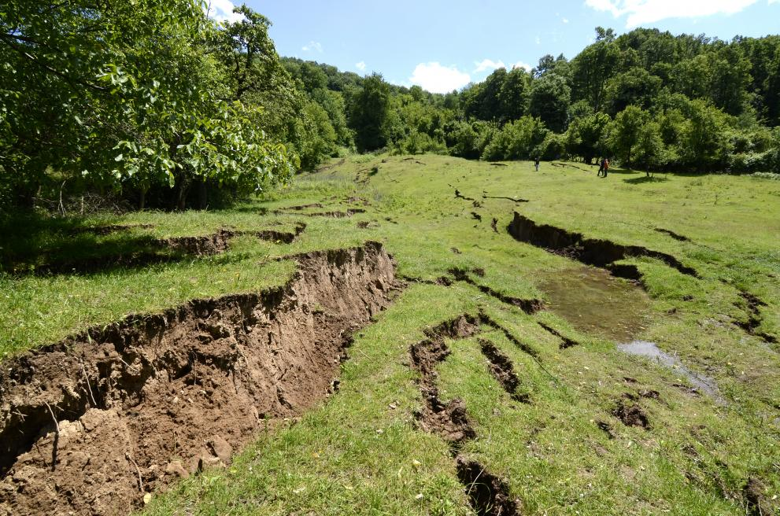
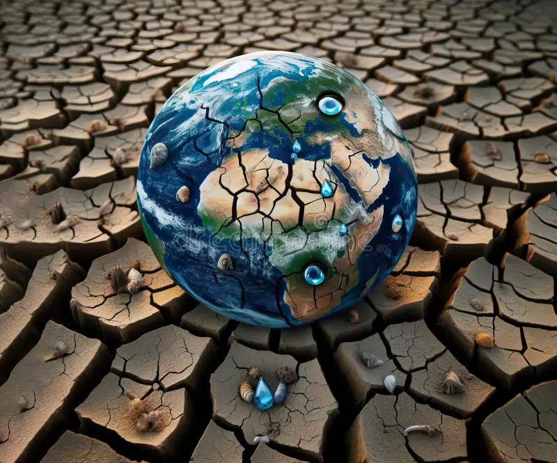

Earth’s Infinite Bounty:
Navigating the Challenges of Land Resource Management
भू संरक्षण
Land Conservation
Challenges in Land Resource Management
1) Deforestation:
Deforestation poses a multitude of challenges to land resource management:
Loss of Biodiversity:
Forests are home to a vast array of plant and animal species. Removing trees leads to habitat destruction, driving species to extinction and disrupting ecosystems.
Soil Degradation:
Trees play a crucial role in maintaining soil integrity. Without them, soil is more prone to erosion, losing its fertility and becoming less productive for agricultural use.
Water Cycle Disruption:
Forests regulate the water cycle by absorbing rainfall and releasing it slowly. Deforestation reduces this capacity, leading to increased runoff, flooding, and reduced groundwater recharge.
Climate Change:
Trees sequester carbon dioxide, helping mitigate climate change. When forests are cleared, stored carbon is released back into the atmosphere, exacerbating global warming.
Impact on Indigenous Communities:
Many indigenous and local communities depend on forests for their livelihoods, culture, and survival. Deforestation disrupts their way of life, leading to social and economic challenges.
2) Soil Erosion:
Soil erosion is a significant challenge in land resource management due to its far-reaching impacts:
Loss of Topsoil:
Erosion strips away the nutrient-rich top layer of soil, which is essential for plant growth. Without it, crop yields plummet, making agricultural land less productive.
Water Quality Issues:
Eroded soil often ends up in waterways, leading to sedimentation. This not only clogs streams and rivers but also degrades water quality, impacting both aquatic ecosystems and human water supplies.
Reduced Soil Fertility:
As soil erosion progresses, the remaining soil becomes less fertile and more compacted. This makes it harder for plants to establish roots and access nutrients, further diminishing land productivity.
Increased Flooding Risk:
Soil erosion can reduce the land's ability to absorb water, increasing surface runoff. This not only heightens the risk of flooding but also accelerates the erosion process itself.

3) Water Scarcity:
Water scarcity directly impacts land resource management in several critical ways:
Agricultural Productivity:
Scarce water resources limit the ability to irrigate crops, leading to reduced agricultural yields and food shortages. This puts pressure on land to produce more with less water, often resulting in overuse and soil degradation.
Soil Health:
Without sufficient water, soil becomes dry and compacted, losing its structure and fertility. This makes it less capable of supporting plant life and more prone to erosion, further degrading land quality.
Biodiversity Loss:
Ecosystems that depend on reliable water sources, such as wetlands and riparian zones, suffer during periods of water scarcity.
Urban Development Pressure:
Cities and towns need water for residential, industrial, and recreational uses. In times of water scarcity, there is often competition between urban and rural areas for limited water supplies, leading to conflicts and mismanagement of land resources.

3) Urbanization:
Urbanization presents several significant challenges to land resource management:
Loss of Agricultural Land:
As cities expand, fertile agricultural land is often converted into urban areas. This reduces the land available for food production and can lead to increased reliance on imported goods.
Habitat Destruction:
Urban sprawl typically results in the destruction of natural habitats. This leads to a loss of biodiversity and disrupts ecosystems, affecting wildlife and plant species.
Increased Pollution:
Urban areas generate significant pollution from vehicles, industries, and construction activities. This pollution can contaminate soil and water resources, making them unsuitable for use.
Water Management Issues:
Cities require large amounts of water, often leading to the over-extraction of local water resources. This can result in water shortages and negatively impact surrounding rural areas and natural ecosystems.